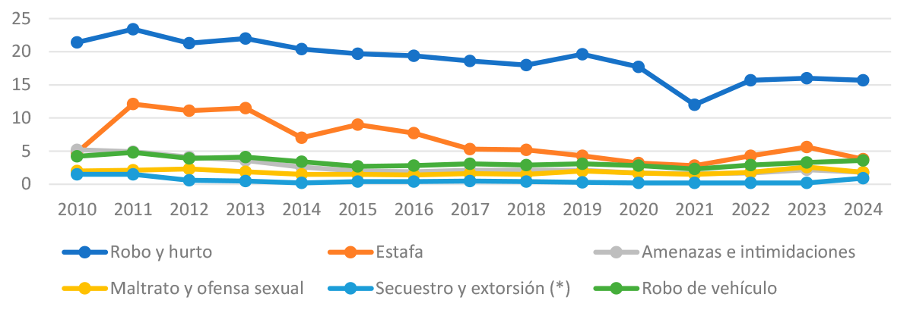
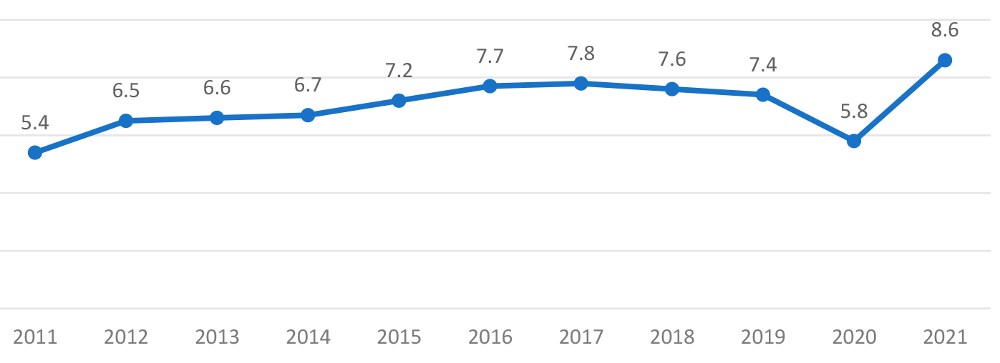
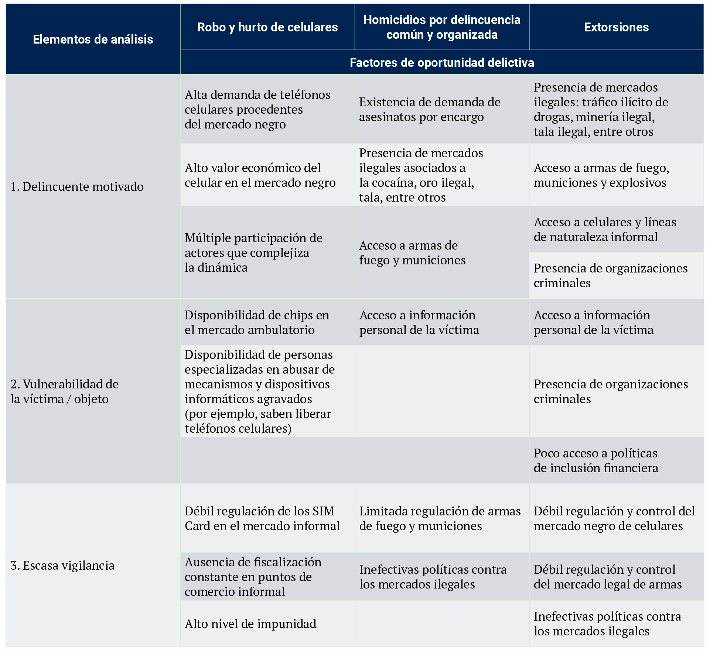
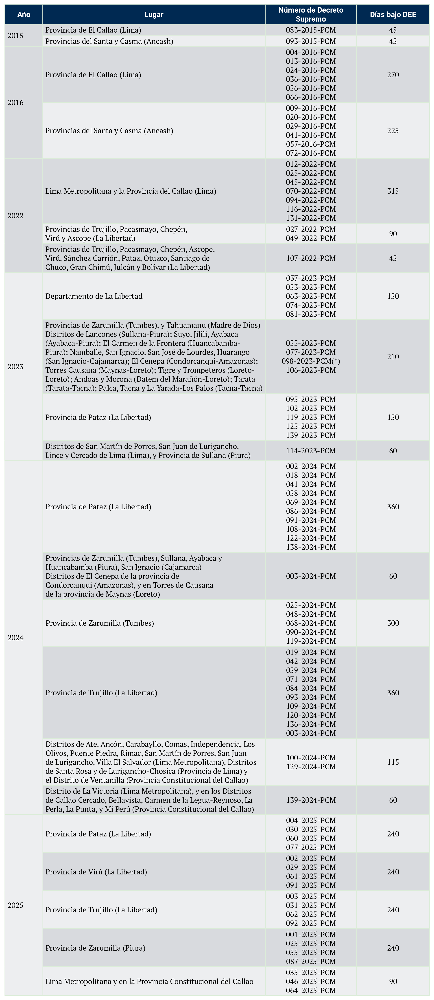
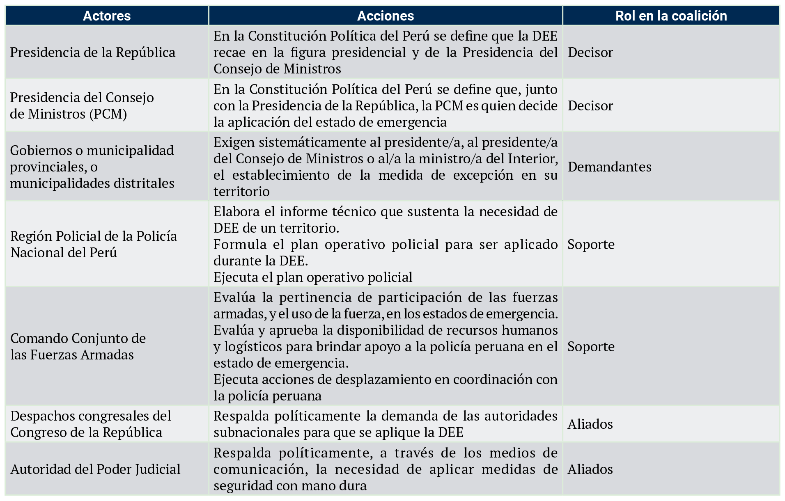
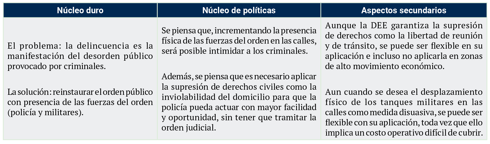
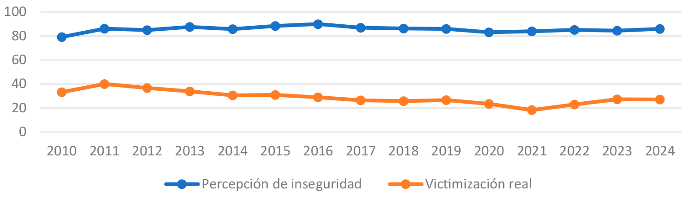

Para citar este artículo / To reference this article / Para citar este artigo: Casas Sulca, F. y Laureano Vargas, G. (2025). El papel de las coaliciones promotoras para la estabilidad de políticas públicas: gobernando la seguridad ciudadana en el Perú a través de estados de emergencia (2015-2025). Revista Criminalidad, 67(3), 133-148.. https://doi.org/10.47741/17943108.713.
Frank Renato Casas Sulca
Doctor (C) en Ciencia Política y Gobierno
Pontificia Universidad Católica del Perú
San Miguel, Perú
casas.frank@pucp.edu.pe
https://orcid.org/0000-0001-8804-6086
Gianella Danitza Laureano Vargas
Magister en Gobierno y Políticas Públicas
Pontificia Universidad Católica del Perú
San Miguel, Perú
glaureano@pucp.edu.pe
https://orcid.org/0009-0002-8335-8165
Se analiza la aplicación de las Declaratorias de Estado de Emergencia (DEE) decretadas por el Estado peruano como política de seguridad ciudadana. Para abordar este caso, se utiliza la teoría de las coaliciones promotoras con el propósito de explicar la fuerza del sistema de creencias de la coalición que promueven las DEE. Los principales resultados de la investigación son: existe una coalición de actores que impulsan un núcleo de creencias sobre la seguridad ciudadana. Dicha coalición es la que promueve la aplicación de las DEE, bajo la idea de que la inseguridad es un problema de orden interno y de que la solución pasa por imponer mano dura a través de policías y militares. El núcleo de creencias de la mencionada coalición se reforzó por la concurrencia de tres factores: (a) la alta percepción de inseguridad que vive el país, (b) la transferencia de “modelos de políticas de seguridad” que conectan con la idea de la coalición y (c) la ausencia de contrapeso político frente a las políticas de seguridad del Gobierno Nacional. El estudio se sustenta en fuentes de información de primaria (entrevistas semiestructuradas a policías, funcionarios de alto nivel, y expertos en la materia), y secundaria (fuentes periodísticas e informes oficiales).
Palabras clave
Aplicación de la ley; crimen; delincuencia; policía; seguridad ciudadana
The application of the Declarations of State of Emergency (DEE) decreed by the Peruvian state as a citizen security policy is analysed. To address this case, the theory of promoting coalitions is used in order to explain the strength of the belief system of the coalition that promotes the DEE. The main findings of the research are: there is a coalition of actors promoting a core set of beliefs regarding citizen security. This coalition is the one that promotes the application of EEDs, under the idea that insecurity is a problem of internal order and that the solution is to impose an iron fist through the police and the military. The coalition’s core beliefs were reinforced by the concurrence of three factors: (a) the high perception of insecurity in the country, (b) the transfer of “security policy models” that connect with the coalition’s idea, and (c) the absence of a political counterweight to the national government’s security policies. The study is based on primary sources of information (semi-structured interviews with police officers, high-level officials and experts in the field) and secondary sources of information (journalistic sources and official reports).
Keywords
Law enforcement; crime; delinquency; police; citizen security
É analisada a aplicação das Declarações de Estado de Emergência (DEE) decretadas pelo Estado peruano como uma política de segurança cidadã. Para abordar esse caso, a teoria de promoção de coalizões é usada para explicar a força do sistema de crenças da coalizão que promove a DEE. As principais conclusões da pesquisa são: existe uma coalizão de agentes que promove um conjunto central de crenças sobre a segurança cidadã. Essa coalizão é a que promove a aplicação dos DEE, sob a ideia de que a insegurança é um problema de ordem interna e que a solução é impor mão de ferro por meio da polícia e das forças armadas. As crenças centrais da coalizão foram reforçadas pela concorrência de três fatores: (a) alta percepção de insegurança no país; (b) a transferência de “modelos de política de segurança“ que se conectam com a ideia da coalizão; e (c) a ausência de um contrapeso político às políticas de segurança do governo nacional. O estudo baseia-se em fontes primárias de informação (entrevistas semiestruturadas com policiais, autoridades de alto nível e especialistas da área) e fontes secundárias de informação (fontes jornalísticas e relatórios oficiais).
Palavras-chave
Aplicação da lei; crime; delinquência; polícia; segurança cidadã
Una de las formas en que las autoridades políticas peruanas han abordado el problema de la inseguridad ciudadana asociada al delito ha sido mediante la aplicación de Declaratorias de Estado de Emergencia (en adelante, DEE), una medida constitucional de excepción que implica la restricción de las libertades civiles. Entre el 2015 y julio del 2025, el Gobierno Nacional decretó 87 DEE en diversas provincias y distritos del país.
A través de la aplicación de esta medida constitucional, el Gobierno Nacional se comprometió a reducir delitos como la extorsión, el delito patrimonial, el sicariato, entre otros. Sin embargo, los informes estadísticos oficiales que miden la seguridad ciudadana muestran que los delitos como el homicidio han mantenido una tendencia creciente, pasando de una tasa por cada cien mil habitantes de 5.8 % en el 2020 a 8.6 % en el 2021 (INEI, 2023). Asimismo, el indicador de victimización delictiva asociado al delito patrimonial, si bien presentó diversos momentos de descenso entre el 2011 al 2019 (mucho antes de la primera aplicación de la DEE), entre el 2021 y 2024 pasó de 12 % a 15.7 %, respectivamente (INEI, 2025).
En diciembre de 2023, el presidente del Consejo de Ministros comunicó ante la opinión pública la decisión del Gobierno de remover de su cargo al comandante general de la Policía Nacional del Perú, y justificó dicha remoción, entre otras causas, porque las DEE con fines de seguridad ciudadana no habían logrado los resultados que deseaban (Infobae, 2024a). Pese a ello, en el 2024, la DEE se aplicó de nuevo en diversas provincias del Perú. Es decir, la política permaneció estable a pesar de su ineficacia (Hernández et al., 2024).
Esta investigación tiene como objetivo analizar la estabilidad de la aplicación de las DEE como medida de seguridad ciudadana en el Perú, desde la perspectiva de las Coaliciones Promotoras de Políticas (ACF, por sus siglas en inglés). Desde la Ciencia Política, el ACF es una de las teorías empleadas para estudiar el cambio o la estabilidad de las políticas públicas (Sabatier y Weible, 2007). Entre otros aspectos, la unidad de análisis del ACF es el desarrollo y la fortaleza del sistema de creencias inherente a la política pública. Por tanto, la pregunta de investigación que se busca responder es la siguiente: ¿qué factores explican la fuerza del sistema de creencias de la coalición que promueve las DEE como política de seguridad ciudadana en el Perú?
Entre los principales resultados de la investigación se encuentra que, en primer lugar, existe una fuerte coalición promotora de las DEE como política de seguridad ciudadana, integrada por alcaldes, altas autoridades del Gobierno Nacional y las fuerzas del orden. Dicha coalición se moviliza en razón a un núcleo de creencias: la “mano dura” es el principal mecanismo para establecer el orden público y la seguridad. En segundo lugar, la idea de la “mano dura” se pone en práctica incrementando la presencia de mayor número de policías y militares en las calles (núcleo de políticas). En tercer lugar, la fuerza de este sistema de creencias se vio favorecida por tres factores: (a) la alta percepción de inseguridad que se vive en el país, (b) la transferencia de “modelos de políticas de seguridad” que conectan con la idea de la coalición y (c) la ausencia de contrapeso político frente a las políticas de seguridad del Gobierno Nacional.
Posteriormente, los resultados de la investigación se utilizan para plantear una discusión más amplia en relación con las características del subsistema de políticas de seguridad ciudadana.
La investigación siguió el siguiente procedimiento: en primer lugar, el estudio tuvo como objetivo central determinar los factores que le otorgan fuerza al sistema de creencias de la coalición que promueve las DDE. Dicho objetivo se desagregó en cuatro objetivos específicos: (a) describir la situación de la inseguridad en el Perú; (b) describir el proceso de implementación de las DEE; (c) determinar los actores que movilizan las DEE y la fuente de su sistema de creencia, y (d) determinar los factores que refuerza el sistema de creencias de la coalición. Los objetivos específicos 1 y 2 se abordaron mediante el uso de información secundaria sistematizada en un formulario. Los objetivos específicos 3 y 4 se trabajaron a partir del marco de las coaliciones de promoción, empleando para ello información de fuentes primarias a través de la aplicación de siete entrevistas semiestructuradas con actores clave. Este proceso incluyó la revisión de informes de prensa, actas de reuniones oficiales de seguridad ciudadana públicas (tanto del Consejo Nacional de Seguridad Ciudadana como de los consejos a nivel subnacional), y la realización de siete entrevistas semiestructuradas con expertos y funcionarios gubernamentales.
La investigación sigue la siguiente estructura narrativa: primero, se presenta el marco teórico de la investigación a partir del enfoque del ACF. Después, se describen los resultados del estudio, el cual está organizado en cuatro subsecciones (en la primera, se analiza el problema de la inseguridad en el Perú asociado al delito; en la segunda, se analiza el proceso de aplicación de las DEE; en la tercera, se muestra la estructura de la coalición; en la cuarta, se plantean los factores que inciden en el éxito de la coalición). Por último, la discusión y las conclusiones.
La teoría de las Coaliciones Promotoras de Políticas (ACF, por sus siglas en inglés) sirve para analizar el cambio o estabilidad de las políticas públicas (Sabatier y Weible, 2007). De acuerdo con este enfoque teórico, la dinámica de las políticas públicas depende de una serie de actores con capacidad para incorporarlas en la agenda, diseñarlas e implementarlas. Estos actores se agrupan en coaliciones que, aunque provienen de diferentes orígenes, o incluso en la práctica pueden no reconocerse como aliados, comparten un sistema de creencias sobre las políticas que son inamovibles.
El ámbito político en el que las coaliciones plantean sus estrategias para promover o defender sus creencias se conoce como subsistemas de políticas. Los subsistemas de políticas, de acuerdo con Sabatier y Weible (2007), hace referencia a un campo específico, donde los actores especializados, con interés de influir en la política pública, intercambian experiencias y luchan por sus intereses. Siguiendo con Sabatier y Weible, para el análisis de los subsistemas de políticas se deben tomar en cuenta dos consideraciones:
En primer lugar, se debe recordar que las políticas públicas están constituidas por un sistema de creencias que implica a su vez una posición ética sobre cómo se piensa abordar la vida social (Majone, 2018; Merino, 2013). Al respecto, Sabatier y Weible (2007) desarrollaron una estructura de sistema de creencias organizada en tres dimensiones. La primera corresponde al núcleo duro, que se caracteriza por establecer los valores éticos de la política, por lo que las posibilidades de cambio son muy bajas, a menos que aparezca otra coalición con capacidad de modificar toda la estructura de la política. La segunda corresponde al núcleo de políticas públicas, que se caracteriza por aglutinar las posiciones concretas que serán ejecutadas por la coalición. Por último, la tercera dimensión corresponde a los aspectos secundarios, a través de los cuales se establece el “cómo” de la implementación de políticas; este aspecto es sumamente flexible y constituye una herramienta de negociación de la coalición.
En segundo lugar, según Sabatier y Weible (2007), la fuerza de la coalición está condicionada a una serie de perturbaciones que impactan en los recursos de las coaliciones. Entre ellas se encuentran:
El Perú es uno de los países latinoamericanos afectados por la inseguridad y la violencia asociada al delito. Aunque el Perú no es un país de alta violencia letal, como lo son México y Colombia, las manifestaciones del delito que se presentan en este país guardan características muy diversas que lo convierten en un problema de compleja solución para el Estado. En este contexto, se identifican dos características centrales del problema delictivo en el Perú:
En primer lugar, no es uno, sino muchos los delitos que generan victimización en el Perú. De hecho, desde el 2010, el Instituto Nacional de Estadística e Informática (INEI) mide, a través de encuestas en hogares, la tasa de victimización de delitos tales como el robo de dinero, cartera y celular, la estafa, el maltrato y ofensa sexual, amenazas e intimidaciones, robo de vehículos, robo de negocios, secuestros y extorsiones. Por otro lado, si bien estas encuestas no recogen información de victimización sobre otros delitos como las violaciones sexuales, la corrupción o la trata de personas, a partir de la evidencia periodística y académica se comprende que muchos peruanos han sido víctimas de estas formas de violencia delictiva (Mujica, 2012; Mujica et al., 2013).
En segundo lugar, esta variedad de prácticas delictivas evoluciona con diversas trayectorias y muestran intensidades diferentes. La figura 1 evidencia las trayectorias e intensidades de los delitos analizados. Por ejemplo, la trayectoria del delito de robo y hurto de dinero, celulares y carteras es diferente a la trayectoria del delito de maltrato y ofensa sexual. El primero, si bien es muy superior en intensidad (más del 70 % de las víctimas del país lo es por el delito patrimonial), su evolución ha pasado por tres etapas (reducción entre el 2013 y 2018, caída libre entre el 2020 y 2021, y un crecimiento sostenido entre el 2021 y 2024). En cambio, el segundo ha tenido una trayectoria mucho más estable.

Siguiendo el argumento anterior, la figura 2 muestra que la evolución del delito de homicidio mantiene una tendencia en crecimiento. En un periodo de 11 años (entre el 2011 al 2021), la tasa de homicidios por cada 100 000 habitantes a nivel nacional creció de 5.4 % a 8.6 %.
Esta diversidad de hechos delictivos y sus diversas trayectorias e intensidades indica que no pueden devenir de una misma causa, sino de la predisposición de una serie de condiciones y oportunidades que inciden en los riesgos de su comisión. En este sentido, la ocurrencia de cada delito se ve favorecida por la existencia y el aprovechamiento de una serie de oportunidades en su propio entorno (Cohen y Felson, 1979).
La tabla 1 presenta un inventario no cerrado de algunos factores de oportunidad que facilitan la comisión de delitos como el robo y hurto de celulares, los homicidios y las extorsiones cometidos en Perú. Como se observa, cada delito puede verse favorecido por una serie de condiciones que reducen los riesgos para su comisión.


Desde el 2009, el Estado peruano ha promovido la creación de una diversidad de herramientas de planificación estratégica orientadas a abordar esta complejidad delictiva (algunas de ellas corresponden a los planes nacionales de seguridad ciudadana, así como del programa presupuestal 0030, y de los planes de acción de seguridad a nivel subnacional). Sin embargo, estas herramientas han sido objeto de críticas, principalmente por sus problemas en el diseño y en la implementación, que no permiten evaluar su contribución a la resolución del problema público (Amaya et al., 2021).
En este escenario de complejidad del problema público asociado al delito, y ante la baja efectividad de los instrumentos de planificación estratégica del Estado, han surgido una serie de actores políticos con iniciativas para garantizar la seguridad ciudadana del país, y que tienen como elemento común, una narrativa que simplifica el problema del delito a la ausencia de mano dura. Una de estas iniciativas corresponde a la promoción de la aplicación de las Declaratorias de Estado de Emergencia (DEE) para combatir el delito.
Estado de emergencia y seguridad ciudadanaLas DEE forman parte de los regímenes de excepción que emplean los Estados para afrontar sucesos extraordinarios, y que la Constitución Política del Perú, en su artículo 137, las reconoce como “caso de perturbación de la paz o del orden interno, de catástrofe o de graves circunstancias que afecten la vida de la nación”. Su doctrina se sustenta en la suspensión de ciertos derechos y garantías constitucionales, y en el otorgamiento de facultades de orden interno a la policía o a las fuerzas armadas (Sayán, 1987).
La génesis de la aplicación de las DEE se remonta a los años setenta, cuando el Perú era gobernado por un régimen militar, en un contexto de movimientos populares, guerrillas civiles y de protesta social (ibíd.). De ahí que parte de la crítica que reviste a esta figura constitucional se deba al aprovechamiento de algunos gobernantes para acallar a sus opositores políticos, así como para reducir los riesgos de una convulsión social (Ilizarbe y Kernaghan, 2025).
La relación entre las DEE y la seguridad ciudadana es más reciente. De hecho, dicho concepto recién aparece en una sentencia del Tribunal Constitucional del 2004, que la incorpora como parte de los aspectos del orden interno:
La primera experiencia de aplicación de las DEE para fines de seguridad ciudadana se dio en diciembre de 2015. Como se puede apreciar en la tabla 2, hasta julio de 2025, se han contabilizado 87 DEE por motivos de seguridad ciudadana. Estos fueron aplicados durante los gobiernos de Ollanta Humala (2015-2016), de Pedro Pablo Kuckinzki (2016), de Pedro Castillo (2022) y de Dina Boluarte (2023-2025).

¿Qué acciones de seguridad ciudadana se implementaron en el marco de las DEE? De acuerdo con las entrevistas realizadas a policías, en situación de estado de emergencia no se ejecutaron acciones operativas que no fueran las habituales, como el patrullaje, operativos de desarticulación de organizaciones criminales, control de identidad, etc. No obstante, sí se distribuyó un mayor número de policías en las zonas declaradas en emergencia, y se efectuaron operativos con mayor frecuencia diaria.
Por otra parte, cuando se consultó a los policías sobre las acciones operativas que realizan las fuerzas militares, mencionaron que su participación es bastante limitada:
Al respecto, un funcionario de alto nivel del Ministerio del Interior reconoció que, en estado de emergencia, el ejército apoya a la policía facilitando vehículos y, de vez en cuando, realiza patrullaje, pero sin ejecutar labores de detención.
Ahora bien, los policías entrevistados indicaron que en las DEE existe una mayor exigencia por parte del Comando Policial para alcanzar una mayor productividad. Durante este tiempo, se exige un mayor número de operativos, un mayor número de detenidos y un mayor número de bienes incautados:
Hasta aquí, lo que tenemos es un contexto en el que el Gobierno Nacional ha pretendido abordar un problema fáctico (la tendencia en crecimiento de diversos delitos) mediante la aplicación de estados de emergencia. No obstante, si bien el estado de emergencia ha impactado positivamente sobre la productividad policial, ello no ha significado un descenso en los hechos delictivos. Pese a su inefectividad para controlar el delito, el Gobierno continúa aplicando las DEE.
Coaliciones con “mano dura”: actores y sistema de creenciasSon diversos los actores que participaron en la promoción y aplicación de los estados de emergencia con fines de seguridad ciudadana. En la tabla 3 se presenta un inventario de actores centrales de la coalición.

Lo que une a este conjunto de actores es la creencia de que la situación de criminalidad en el Perú es, principalmente, la manifestación del desorden público impuesto por actores criminales que actúan con impunidad. En tal sentido, según este sistema de creencias, la solución al problema pasa por recuperar el orden público mediante la captura de los delincuentes por parte de la policía y los militares. Ello ocurre a pesar de que no existe ninguna evidencia que demuestre que la prevención del delito se logra únicamente a través de la operatividad policial o militar, o mediante la reducción de derechos civiles.
En la tabla 4 se presenta el sistema de creencias de la coalición promotora.

Este sistema de creencias no toma en consideración los factores estructurales y de oportunidad del fenómeno delictivo (revisado en el apartado “El problema del delito en el Perú”), los cuales exigen la aplicación de una estrategia estatal integrada, con la participación de diversas organizaciones públicas, no solo del sistema de justicia, sino también del sistema social y económico.
Por otra parte, la prescripción operativa de la política (núcleo de políticas) se sustenta en la idea de que, para alcanzar la efectividad en los territorios afectados por la inseguridad y el delito, es necesario aumentar el número de personal de las fuerzas del orden y reducir los derechos civiles, como la inviolabilidad del domicilio, para facilitar la actuación policial o militar.
La coalición, sin embargo, tiende a ser menos rígida respecto a un grupo de temas asociados con la DEE. Por ejemplo, aunque la medida constitucional de la DEE podría implicar la suspensión de la libertad de tránsito y de reunión, en la práctica dicha medida no se aplicó. Al respecto, si bien existe un grupo de actores de la coalición que considera que se debería aplicar con rigor todas las disposiciones que implica la ley, otro grupo de actores de la coalición es más flexible con dicha medida, toda vez que es consciente de los efectos sociales negativos que se podría generar, por ejemplo, en la economía local. Un ejemplo de ello ocurrió cuando un alcalde promotor de la DEE en su distrito solicitó que la policía fuera flexible con los comercios nocturnos (discotecas, bares, restaurantes).
Se identifican tres factores clave que fortalecen a la coalición:
Primer factor: la alta percepción de inseguridad ciudadana. La figura 3 muestra que entre el 2010 y 2023, la percepción de inseguridad se mantuvo estable con una tasa promedio de 85 %, incluso en tiempos en que la victimización real decreció. La percepción de inseguridad es “la interpretación que tiene la persona acerca de su entorno, que demuestra falta de protección ante la posibilidad de ser víctima de un hecho que atente o vulnere sus derechos como persona” (INEI, 2018, p. 385). Esta percepción de inseguridad no solo responde al miedo de ser víctima de un hecho criminal, sino también a otros factores asociados con la mediatización de la violencia criminal (Kanashiro et al., 2017) y la construcción mediática de sujetos criminales (por ejemplo, asociados con la migración venezolana), así como por la experiencia con la violencia interpersonal en la vida cotidiana (Mujica y Zevallos, 2017).

Este escenario de percepción de inseguridad le otorga legitimidad social al discurso de la coalición promotora de la DEE, en la medida que se conecta con la preocupación del ciudadano que percibe un alto riesgo de ser víctima de algún tipo de hecho delictivo. Además, este escenario refuerza la narrativa del problema y de la propuesta de solución de la coalición, respecto a que el Perú se encontraría en la etapa más crítica de inseguridad, para lo cual se deben tomar medidas extremas y de mano dura.
Por ejemplo, en el emporio comercial “Gamarra” ubicado en el distrito limeño de La Victoria, cerca del 90 % de los empresarios textiles manifiestan sentirse inseguros, pese a que solo el 9.1 % de ellos ha sido víctima real de algún hecho delictivo (Infobae, 2024b). Precisamente, esta situación de permanente estado de inseguridad influyó en la decisión del gremio de empresarios para protestar (mediante la paralización de sus actividades económicas) y solicitar ante el Gobierno Nacional la aplicación de la DEE en su zona de trabajo, así como el desplazamiento de un mayor número de personal policial y del ejército para que realicen labores de vigilancia y detención. De hecho, ante los medios de comunicación, la representante del gremio señaló lo siguiente: “[En Gamarra], necesitamos por lo menos mil efectivos” (Canal N, 2024).
Segundo factor: transferencia de “modelos de políticas de seguridad” que conectan con la idea de la coalición. Son dos los “modelos de política de seguridad” que se conectan con el sistema de creencias de la coalición: (a) policías por habitante y (b) el plan Bukele.
Ambos “modelos” de políticas de seguridad no solo refuerzan el sistema de creencias de la coalición, sino que también refuerzan su narrativa de políticas ante la opinión pública, ya que les sirve de sustento real para determinar las prioridades en el marco de la DEE.
Tercer factor: débil contrapeso político respecto a la DEE. El sistema de creencia de la coalición que promueve la DEE se refuerza con la debilidad del contrapeso político. Si bien es el Congreso de la República el que debe ejercer acciones de contrapeso político al Gobierno Nacional, en la práctica esto no solo no ocurre, sino que algunos congresistas han cumplido el rol de aliados de la coalición (véase tabla 4). Por ejemplo, el representante de la Comisión Especial Multipartidaria de Seguridad Ciudadana del Congreso de la República, durante el 2023, fue crítico de la aplicación de la DEE y del ministro del Interior de entonces, solicitando incluso su salida del cargo. Sin embargo, durante el 2024 en la medida que estableció un vínculo más cercano con el nuevo ministro del Interior, su postura sobre la DEE fue más bien positiva (Diario El Comercio, 2025).
Por otra parte, desde el nivel de los gobiernos subnacionales que promueven la DEE, quien debe ejercer acciones de contrapeso son los regidores de los mismos gobiernos subnacionales; pero, salvo algunos casos específicos, la mayoría de los regidores estuvieron de acuerdo en apoyar la iniciativa de la autoridad política y la aprobaron en reuniones del consejo (regional, provincial o distrital).
Por último, es importante destacar la ausencia de alternativas de solución por parte de una “coalición proreforma”. Si bien durante el tiempo en que se aplicaron las DEE, un grupo de congresistas, dirigentes de partidos políticos y expertos independientes han criticado la persistencia en la aplicación de las DEE, estas reacciones han aparecido de manera dispersa y fragmentada. Además, salvo algunas excepciones, no se han planteado alternativas de solución específicas.
Primero: el análisis sobre la estructura del sistema de creencias de la coalición brinda información relevante para determinar las características del subsistema de políticas (Cejudo y Trein, 2023). Sobre ello, se sostiene que el sistema de creencias de la coalición promotora de la DEE guarda relación con las características del enfoque clásico de las políticas de seguridad interna de un país, cuya doctrina e instituciones priorizan la actuación policial o militar (Shearing y Wood, 2011). Esto es muy relevante para el análisis de las políticas de seguridad ciudadana, toda vez que evidencia que el marco de referencia desde el que los actores políticos piensan y abordan la seguridad ciudadana es muy rígido y prioriza el tema policial o militar con relación a otras perspectivas, actores e instituciones que también cumplen un papel fundamental para la prevención del delito (véase apartado “El problema del delito en el Perú”). Comprender este asunto es relevante a la hora de analizar los límites de la construcción de políticas públicas de seguridad ciudadana que puedan integrarse a otras políticas públicas (Cejudo y Trein, 2023).
Segundo: la trayectoria de la DEE como política de seguridad ciudadana en el Perú permite confirmar que, a diferencia de lo que ocurrió en sectores como la economía (Dargent, 2015), el subsector de la política de seguridad ciudadana es muy vulnerable a la intromisión política. Si bien después de la caída del gobierno de Alberto Fujimori, el Gobierno Nacional generó instituciones para la formación de una tecnocracia civil capaz de gestionar diversas organizaciones públicas asociadas con el Ministerio del Interior y la Policía Nacional (por ejemplo, para la gestión de instrumentos de políticas públicas, la gestión del presupuesto, la contratación y la formación de funcionarios no castrenses). En la práctica, dichos instrumentos quedan relegados a un segundo plano por encima de iniciativas políticas con escaso sustento técnico, como el estado de emergencia.
Tercero: la aplicación de la DEE como política de seguridad ciudadana tampoco ha contribuido al fortalecimiento de la capacidad policial o militar; ello discrepa de la literatura especializada que observa el incremento de las capacidades policiales en contextos de políticas autoritarias y de mano dura (Younger y Rosin, 2005). De hecho, las brechas de acceso a recursos logísticos y humanos continúan siendo muy altas y no se han resuelto (Infodefensa.com, 2023). Ello permite comprender por qué muchas veces, al interior de las fuerzas armadas, hay resistencia para desplegar mayor número de personal a un territorio, toda vez que ello implica reducir el número de militares de otras zonas. Por el contrario, se considera que la DEE podría afectar la confianza ciudadana en las fuerzas de orden, dado que, con esta medida, algunas autoridades políticas tratan de eludir su responsabilidad de este problema complejo, y dirigen la atención de la opinión pública hacia las fuerzas del orden.
Cuarto: los tres factores desarrollados en la investigación permiten explicar la estabilidad del núcleo político inherente a la DEE, tanto en tiempos donde hubo orden democrático (2015 y 2016) como en un contexto que linda más con el autoritarismo como forma de gobierno (2022-2024) (Tanaka, 2024). Sin perjuicio de ello, sí es importante mostrar una diferencia clave: la aplicación de la DEE ha sido más recurrente en tiempos de autoritarismo. Ello refuerza lo que anteriormente se ha dicho en la literatura especializada.
El artículo analizó el caso de la estabilidad de la DEE como política de seguridad ciudadana, desde la perspectiva de las coaliciones promotoras.
La coalición que promovió la DEE en el Perú estuvo constituida por diversas autoridades electas a nivel subnacional, el Gobierno Nacional, congresistas de la República y por la policía peruana. El sistema de creencias promovido por la coalición sostiene que la inseguridad ciudadana asociada al delito constituye un problema de orden interno, y, por tanto, es responsabilidad de las fuerzas policiales y militares (núcleo político). En ese marco, a través de la DEE se promueven medidas orientadas a incrementar el número de las fuerzas del orden en las calles, y a reducir derechos civiles para facilitar la labor de detención de criminales (núcleo de políticas). No obstante, la coalición tiende a ser más flexible con las acciones de mano dura cuando estas pueden afectar la economía local.
Son tres los factores que refuerzan el núcleo de creencias de la coalición: en primer lugar, un escenario donde la percepción de inseguridad es muy alta, el cual legitima la urgencia por aplicar medidas de mano dura. En segundo lugar, la transferencia de “modelos” de política de seguridad, tales como “policía por habitante” y “plan Bukele”, que conecta con la receta de solución que promueve la coalición. En tercer lugar, la debilidad del contrapeso político le otorga oportunidad política a la coalición para que mantenga la DEE; ya sea porque la coalición está conformada por actores con capacidad de veto (como los congresistas) o porque no hay otra coalición que promueva un cambio de política.
Conflicto de interés: no se presentó conflicto de interés entre los autores de la presente investigación académica. Declaramos que no tenemos ninguna relación financiera o personal que pudiera influir en la interpretación y publicación de los resultados obtenidos. Asimismo, aseguramos cumplir con las normas éticas y de integridad científica en todo momento, de acuerdo con las directrices establecidas por la comunidad académica y las dictaminadas por la presente revista.
Amaya, E., Cozzubo, Á., Cueto, J. y Hernández, W. (2021). Resultados de Barrio Seguro en lucha contra el crimen: mirada a la criminalidad y percepción de inseguridad. Desco y Grade.
Canal ATV. (2023). Alcalde de SJL exige estado de emergencia: “Necesitamos que las Fuerzas armadas ingresen para un patrullaje”. https://acortar.link/hP1akq
Canal N. (2023). Alcalde de Los Olivos recomienda adoptar algunas acciones del plan Bukele para el Perú. https://acortar.link/JKYrAc
Canal N. (2024). Se necesitarían al menos mil policías y militares en Gamarra. https://acortar.link/pGFS7O
Cejudo, G. y Trein, Ph. (2023). Pathways to policy integration: A subsystem approach. Policy Sci, 56, 9-27. https://doi.org/10.1007/s11077-022-09483-1
Center for the Study of Democracy (CSD). (2016). Extortion racketeering in the EU vulnerability factors. Sofia: CSD, Transcrime – Universitá Cattolica del Sacro Cuore, Universidad Autónoma de Madrid, Guardia Civil.
Cohen, L. y Felson, M. (1979). Social change and crime rate trends: A routine activity approach, American Sociological Review, 44(4), 588-608.
Dargent, E. (2015). Technocracy and democracy in Latin America. The experts running government. Cambridge University Press.
Diario El Comercio. (2025). Alfredo Azurín de Somos Perú: “Votar por la censura del ministro Santiváñez no va a contribuir en nada”. https://acortar.link/9iy3c2
Diario Ojo. (2015). Félix Moreno y otros alcaldes solicitan se prorrogue el estado de emergencia. https://acortar.link/s5oWyA
Hernández, W., Cozzubo, Á. y Román, A. (2024). ¿A costa de qué?: impacto de corto y mediano plazo de los Estados de Emergencia en el Callao sobre la seguridad ciudadana, violencia de pareja y el bienestar social. CIES, GRADE y Fundación M. J. Bustamante de la Fuente.
Ilizarbe, C., y Kernaghan, R. (2025). Presentación: Aproximaciones a la historia, vigencia y materialidad del estado de emergencia en el Perú. Anthropologica, 43(54), 362–366. Recuperado a partir de https://acortar.link/hivhnF
Infobae. (2024a). Estados de emergencia fallidos, alta criminalidad y negligencia: los motivos del Gobierno para destituir a Jorge Angulo. https://acortar.link/Qw2XfU
Infobae. (2024b). Gamarra: 8 de cada 10 comerciantes fue víctima de la inseguridad en el último año, según empresarios. https://acortar.link/g7mvQS
Infodefensa.com. (2023). El general Jorge Angulo propone declarar en emergencia a la Policía Nacional de Perú. https://acortar.link/HUDLDi
Instituto Nacional de Estadística e Informática (INEI). (2025). Victimización en el Perú 2024. INEI.
Instituto Nacional de Estadística e Informática (INEI). (2024). Victimización en el Perú 2015-2023. Principales resultados. INEI.
Instituto Nacional de Estadística e Informática (INEI). (2023). Homicidios en el Perú contándolos uno a uno 2021. INEI.
Instituto Nacional de Estadística e Informática (INEI). (2018). Encuesta Nacional Especializada sobre Victimización 2017. INEI.
Kanashiro, L., Dammert, L. y Hernández, W. (2017). Percepción de inseguridad: determinantes y narrativas. CIES, Universidad de Lima.
Majone, G. (2018). Evidencia, argumentación y persuasión en la formulación de políticas (4ª ed.). Fondo de Cultura Económica.
Merino, I. (2013). La importancia de la ética en el análisis de las políticas públicas. En Merino et al., Problemas, decisiones y soluciones. Enfoques de política pública (1ª reimpresión). Fondo de Cultura Económica y CIDE.
Mujica, J. (2012). Armas pequeñas en el crimen urbano. Delitos, acceso y mercados ilegales de armas de fuego en Lima. Clacso, Cisepa - Pontificia Universidad Católica del Perú.
Mujica, J., Zevallos, N. y Vizcarra, S. (2013). Estudio de estimación del impacto y prevalencia de la violencia sexual contra mujeres adolescentes en un distrito de la Amazonía peruana. Promsex, Aecid, Interarts e Inagru.
Mujica, J. y Zevallos, N. (2017). El crimen y la violencia en Lima Metropolitana: hipótesis de trabajo. Wilson Center - Programa violencias y criminalidad en las principales ciudades andinas.
RPP (2023). “Es disuasivo”: el alcalde de Lima reiteró pedido de militares en las calles para hacer frente a la inseguridad. https://acortar.link/XLow3Z
Sabatier, P. y Weible, Ch. (2007). The advocacy coalition framework: Innovations and clarifications. In Theories of the policy process (2ª ed.), (pp. 189-222). Westview Press.
Sayán. (1987). Estados de Emergencia en la Región Andina. Comisión Andina de Juristas.
Shearing, C. y Wood, J. (2011). Pensar la seguridad. Gedisa.
Tanaka, M. (2024). Perú en 2023: de la polarización a la coalición conservadora y populista durante el gobierno de Dina Boluarte. Revista de Ciencia Política, 44(2). https://doi.org/10.4067/s0718-090x2024005000123
Tribunal Constitucional del Perú. (2004). Proceso de inconstitucionalidad contra la Ley No. 2916, que aprueba normas complementarias a la Ley No. 28222 y las reglas del empleo de la fuerza por parte de las Fuerzas Armadas en el Territorio Nacional. Exp. No. 00002-2008-PI/TC.
Younger, C. y Rosin, E. (2005). Drogas y democracia en América Latina. El impacto de la política de Estados Unidos. WOLA.